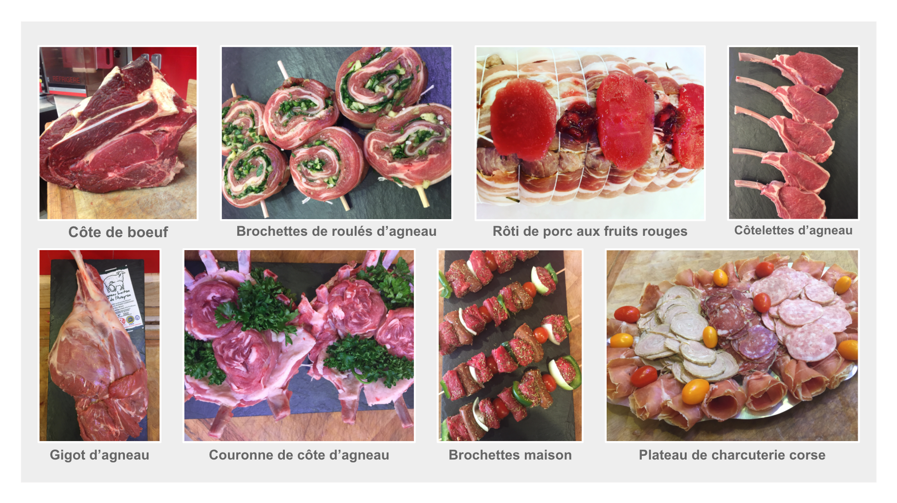

A propos
Bienvenue sur le site web de la boucherie de Captieux.
Vous trouverez ici plusieurs informations telles que l'origine de nos viandes, notre histoire, notre localisation et nos coordonnées.
Nous espérons vous convaincre de l'excellence de nos viandes et produits et vous attendons avec impatience dans notre boucherie.

Origine de nos viandes et produits
La boucherie de Captieux vous propose des viandes et produits d'exception en circuit court quand possible.
Nous prêtons une attention particulière à l'éco-responsabilité de nos viandes et favorisons le commerce avec les petits producteurs.
Ainsi les viandes et produits que vous achetez dans notre boucherie protègent l'environnement et soutiennent les producteurs locaux.
Notre histoire
Je me présente, je m'appelle Patrick Le verge et avec ma femme Florence nous sommes les heureux responsables de la boucherie de Captieux.
C'est dans cette même boucherie que j'ai commencé à apprendre le métier de boucher, perpétuant ainsi une tradition d'excellence et de passion pour le métier.
Mon objectif est de vous proposer des viandes et produits de la plus haute qualité, sélectionnés avec soin et attention.
Notre sélection de produits
Notre boucherie vous propose une large sélection de viandes et produits afin de vous permettre de varier les plaisirs.
